Motivo xadrez (a referência ao tabuleiro da Cartoon) na nossa paleta verde de tubo. Cada card mostra o ícone grande e depois em 48px e 16px reais, sobre fundo claro e escuro — é assim que ele vai aparecer na barra de tarefas e no Menu Iniciar. O teste que importa é o 16px: desenho bonito que vira mingau pequeno não serve.
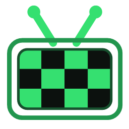
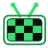
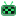
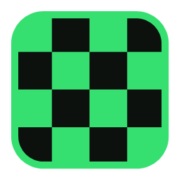
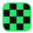
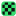
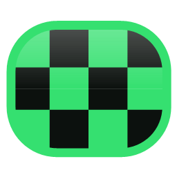
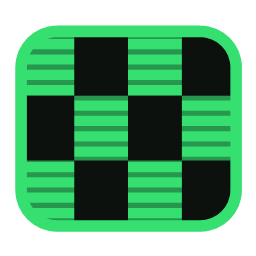
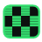
Vale pra qualquer opção acima — é a mesma linguagem, com o xadrez no visorzinho.
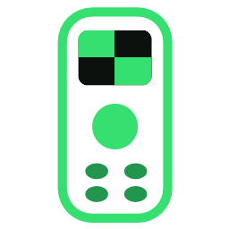
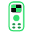
Minha recomendação: C para a TV. O B ganha em 16px, mas dois atalhos lado a lado precisam se distinguir de relance — o formato de tubo do C faz isso contra o retângulo do controle, e ainda assim sobrevive pequeno. Se você preferir o mais “marca”, é o B.